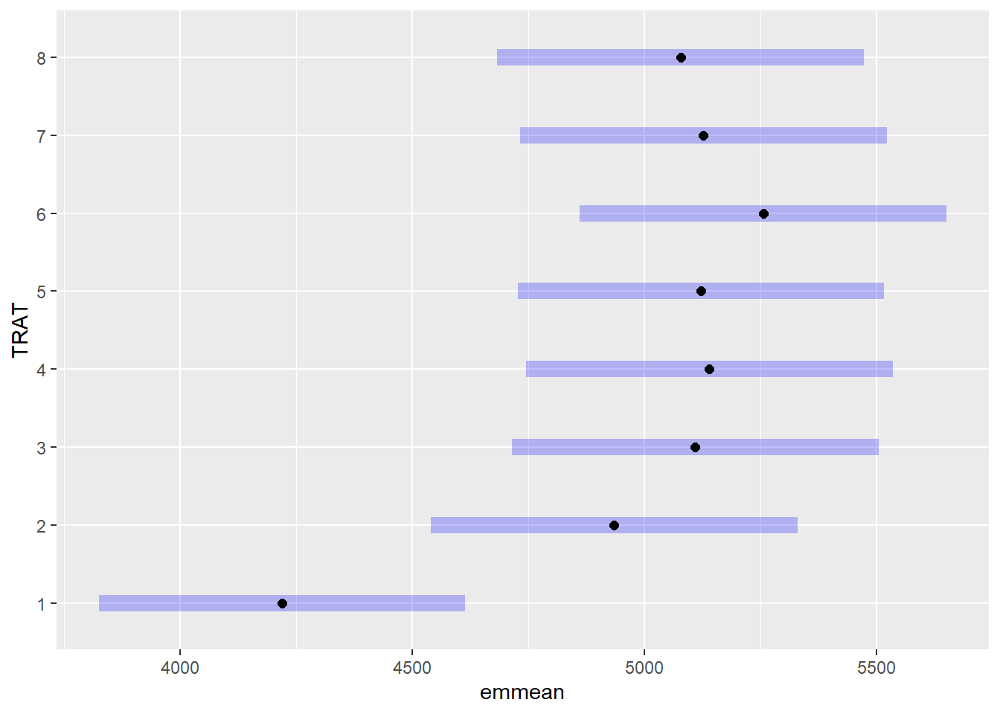

# Pacotes necessários para o script completo
library(gsheet) # Para importar dados do Google Sheets
library(Hmisc) # Para stat_summary e manipulação de dados
library(ggplot2) # Para visualizações
library(lme4) # Para modelos lineares mistos (lmer)
library(DHARMa) # Para diagnóstico de modelos mistos
library(emmeans) # Para estimativas de médias marginais (EMMs)
library(multcomp) # Para comparação múltipla com letras (cld)
library(car) # Para Anova tipo II/III e utilidades adicionaisanova_dbc_parcelas_sub
ANOVA - DBC
O Delineamento em Blocos Casualizados (DBC) é utilizado quando há uma variação ambiental conhecida que pode interferir nos resultados do experimento. Ele incorpora os três princípios da experimentação:
Repetição;
Casualização;
Controle local.
Neste caso, os tratamentos são aleatoriamente atribuídos dentro de cada bloco, o que permite controlar a variação não desejada (ex: diferenças de solo, luminosidade ou umidade no campo experimental).
Importação de dados
A importação de dados é feita diretamente de uma planilha do Google Sheets usando a função gsheet2tbl(). Essa abordagem é útil porque permite manter os dados atualizados automaticamente.
library(gsheet)
campo <- gsheet2tbl("https://docs.google.com/spreadsheets/d/1bq2N19DcZdtax2fQW9OHSGMR0X2__Z9T/edit?gid=866852711#gid=866852711")Transformação de dados
Antes das análises, as variáveis categóricas são convertidas para o tipo fator, o que é essencial para que sejam tratadas corretamente nos modelos.
library(Hmisc)
campo$TRAT <- factor(campo$TRAT)
campo$BLOCO <- factor(campo$BLOCO)Visualização exploratória
Gráfico de dispersão por tratamento, com média e intervalo de confiança em vermelho.
campo |>
ggplot(aes(TRAT, PROD)) +
geom_jitter(width = 0.1) +
stat_summary(
fun.data = "mean_cl_boot",
colour = "red", size = 0.3
)Análise de variância (ANOVA) com efeito de bloco
É utilizado um modelo linear misto (lmer) com TRAT como efeito fixo e BLOCO como efeito aleatório.
library(lme4)
m_campo <- lmer(PROD ~ TRAT + (1|BLOCO), data = campo)
anova(m_campo)Analysis of Variance Table
npar Sum Sq Mean Sq F value
TRAT 7 2993906 427701 2.9227Diagnóstico do modelo
Avaliação dos resíduos simulados, fundamental para validar as suposições da ANOVA (normalidade e homocedasticidade).
library(DHARMa)
plot(simulateResiduals(fittedModel = m_campo))Estimativa de médias ajustadas e comparação múltipla
As médias ajustadas (EMMs) são estimadas para os tratamentos, seguidas de comparação de grupos usando letras diferentes (cld).
means_campo <- emmeans(m_campo, ~TRAT)
means_campo TRAT emmean SE df lower.CL upper.CL
1 4219 191 24 3824 4614
2 4935 191 24 4540 5330
3 5110 191 24 4715 5505
4 5140 191 24 4745 5535
5 5122 191 24 4727 5517
6 5256 191 24 4861 5651
7 5128 191 24 4733 5522
8 5078 191 24 4683 5473
Degrees-of-freedom method: kenward-roger
Confidence level used: 0.95 plot(means_campo)
library(multcomp)
cld(means_campo) TRAT emmean SE df lower.CL upper.CL .group
1 4219 191 24 3824 4614 1
2 4935 191 24 4540 5330 12
8 5078 191 24 4683 5473 12
3 5110 191 24 4715 5505 12
5 5122 191 24 4727 5517 12
7 5128 191 24 4733 5522 2
4 5140 191 24 4745 5535 2
6 5256 191 24 4861 5651 2
Degrees-of-freedom method: kenward-roger
Confidence level used: 0.95
P value adjustment: tukey method for comparing a family of 8 estimates
significance level used: alpha = 0.05
NOTE: If two or more means share the same grouping symbol,
then we cannot show them to be different.
But we also did not show them to be the same. pwpp(means_campo)ANOVA - Parcelas Subdivididas
O delineamento em parcelas subdivididas é usado quando se deseja estudar dois fatores, mas um deles exige maior parcela experimental. Neste caso, o fator principal é o híbrido e o fator secundário é o método. O uso de blocos e a subdivisão permitem maior controle experimental e economia de recursos.
Importação dos dados
milho <- gsheet2tbl("https://docs.google.com/spreadsheets/d/1bq2N19DcZdtax2fQW9OHSGMR0X2__Z9T/edit?gid=1345524759#gid=1345524759")Visualização exploratória
milho |>
ggplot(aes(hybrid, index, color = method)) +
geom_jitter(width = 0.1)+
coord_flip() +
facet_wrap(~method)Criação de fator de subparcela
A interação entre hybrid e block representa as subparcelas dentro de cada parcela principal.
milho$hybrid_block <- interaction(milho$hybrid,milho$block)
#ou
#milho |>
# mutate(hybrid_bock = interaction(hybrid,block))Modelo linear misto para parcelas subdivididas
A análise considera a interação entre híbrido e método como efeitos fixos, e os blocos aninhados como efeito aleatório.
library(lme4)
m_milho <- lmer(index ~ hybrid*method +
(1 | block:hybrid_block),
data = milho)
car::Anova(m_milho)Analysis of Deviance Table (Type II Wald chisquare tests)
Response: index
Chisq Df Pr(>Chisq)
hybrid 11.4239 5 0.04359 *
method 4.6964 1 0.03023 *
hybrid:method 15.8062 5 0.00742 **
---
Signif. codes: 0 '***' 0.001 '**' 0.01 '*' 0.05 '.' 0.1 ' ' 1Diagnóstico do modelo
plot(simulateResiduals(m_milho))Médias ajustadas por híbrido dentro de cada método
media_milho <- emmeans(m_milho, ~ hybrid | method)
media_milhomethod = pin:
hybrid emmean SE df lower.CL upper.CL
30F53 HX 25.3 3.57 24.9 17.9 32.6
30F53 YH 24.6 3.57 24.9 17.3 31.9
30K64 20.6 3.57 24.9 13.2 27.9
30S31H 38.1 3.57 24.9 30.8 45.4
30S31YH 32.5 3.57 24.9 25.2 39.8
BG7049H 19.4 3.57 24.9 12.1 26.8
method = silk:
hybrid emmean SE df lower.CL upper.CL
30F53 HX 25.0 3.57 24.9 17.7 32.3
30F53 YH 26.2 3.57 24.9 18.9 33.6
30K64 21.5 3.57 24.9 14.2 28.8
30S31H 26.5 3.57 24.9 19.2 33.8
30S31YH 26.6 3.57 24.9 19.3 34.0
BG7049H 19.2 3.57 24.9 11.8 26.5
Degrees-of-freedom method: kenward-roger
Confidence level used: 0.95 Correlação entre Yield e Index
Neste estudo, foi investigada a relação entre o índice index e a produtividade yield de plantas de milho. Para isso, utilizou-se um gráfico de dispersão com uma reta de regressão linear, gerado com a função ggplot. A dispersão dos pontos foi suavizada com geom_jitter() para evitar sobreposição, e a tendência entre as variáveis foi representada por uma linha ajustada via geom_smooth(method = "lm"), que aplica um modelo linear simples.
milho |> ggplot(aes(index, yield)) +
geom_jitter() +
geom_smooth(method = "lm")#correlação
cor1 <- cor(milho$index, milho$yield)
cor1*cor1*100[1] 6.323713cor.test(milho$index, milho$yield)
Pearson's product-moment correlation
data: milho$index and milho$yield
t = -1.7622, df = 46, p-value = 0.08468
alternative hypothesis: true correlation is not equal to 0
95 percent confidence interval:
-0.49988704 0.03517829
sample estimates:
cor
-0.2514699 O gráfico resultante indica uma tendência negativa: à medida que os valores do índice aumentam, a produtividade tende a diminuir. Essa tendência é expressa pela inclinação negativa da reta azul, e a área sombreada ao redor dela representa o intervalo de confiança do modelo de regressão linear, evidenciando a incerteza associada à estimativa da média.
Para quantificar essa relação, foi calculado o coeficiente de correlação de Pearson entre as duas variáveis. O valor obtido foi de aproximadamente -0,25, indicando uma correlação fraca e negativa entre o índice e a produtividade. Em outras palavras, embora exista uma tendência de redução da produtividade com o aumento do índice, essa relação não é forte. O coeficiente de determinação associado (R²) foi de apenas 6,32%, o que significa que apenas cerca de 6% da variação observada na produtividade pode ser explicada pela variação no índice. O restante se deve a outros fatores não considerados neste modelo.
Adicionalmente, foi realizado o teste estatístico de correlação de Pearson. O valor de p obtido foi de 0,084, o que não é estatisticamente significativo ao nível de 5% (p > 0,05). Isso significa que não há evidências suficientes para rejeitar a hipótese nula de que não existe correlação entre as variáveis. O intervalo de confiança para a correlação (de -0,50 a 0,035) inclui o valor zero, reforçando essa conclusão.
Portanto, embora o gráfico sugira uma leve tendência decrescente entre o índice e a produtividade, os resultados estatísticos indicam que essa associação é fraca e não significativa. É provável que outros fatores estejam influenciando a produtividade de maneira mais relevante do que o índice analisado.
summary(milho) hybrid block method index
Length:48 Min. :1.00 Length:48 Min. :14.40
Class :character 1st Qu.:1.75 Class :character 1st Qu.:21.10
Mode :character Median :2.50 Mode :character Median :22.75
Mean :2.50 Mean :25.46
3rd Qu.:3.25 3rd Qu.:28.07
Max. :4.00 Max. :48.90
yield hybrid_block
Min. : 6621 30F53 HX.1: 2
1st Qu.: 8058 30F53 YH.1: 2
Median : 9772 30K64.1 : 2
Mean :10006 30S31H.1 : 2
3rd Qu.:11816 30S31YH.1 : 2
Max. :14280 BG7049H.1 : 2
(Other) :36 Comparações múltiplas com letras (Teste de Tukey)
Após a ANOVA e a obtenção das médias ajustadas com emmeans, é possível realizar um teste de comparações múltiplas para verificar quais tratamentos diferem estatisticamente entre si. Utiliza-se a função cld() do pacote multcomp, que adiciona letras indicando grupos estatisticamente diferentes com base em um teste como o de Tukey. Esse tipo de análise é comum em experimentos com múltiplos tratamentos, como nos delineamentos em parcelas subdivididas.
Médias com letras iguais pertencem ao mesmo grupo estatístico (ou seja, não diferem significativamente). Médias com letras diferentes pertencem a grupos distintos e são estatisticamente diferentes ao nível de significância adotado (geralmente 5%).
cld_milho <- cld(media_milho, Letters = letters, adjust = "tukey")
cld_milhomethod = pin:
hybrid emmean SE df lower.CL upper.CL .group
BG7049H 19.4 3.57 24.9 9.26 29.6 a
30K64 20.6 3.57 24.9 10.36 30.7 a
30F53 YH 24.6 3.57 24.9 14.41 34.8 ab
30F53 HX 25.3 3.57 24.9 15.08 35.5 ab
30S31YH 32.5 3.57 24.9 22.31 42.7 ab
30S31H 38.1 3.57 24.9 27.91 48.3 b
method = silk:
hybrid emmean SE df lower.CL upper.CL .group
BG7049H 19.2 3.57 24.9 8.98 29.4 a
30K64 21.5 3.57 24.9 11.31 31.7 a
30F53 HX 25.0 3.57 24.9 14.81 35.2 a
30F53 YH 26.2 3.57 24.9 16.06 36.4 a
30S31H 26.5 3.57 24.9 16.31 36.7 a
30S31YH 26.6 3.57 24.9 16.46 36.8 a
Degrees-of-freedom method: kenward-roger
Confidence level used: 0.95
Conf-level adjustment: sidak method for 6 estimates
P value adjustment: tukey method for comparing a family of 6 estimates
significance level used: alpha = 0.05
NOTE: If two or more means share the same grouping symbol,
then we cannot show them to be different.
But we also did not show them to be the same.